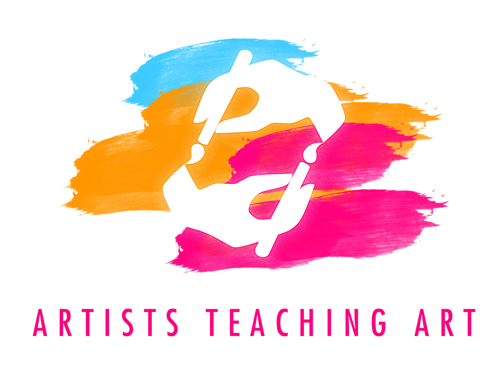

In developing their brand identity, we focused on Artists Teaching Art's three ideals: collaboration, cooperation, and communication. We used hands as a visual metaphor to embody these ideals. Through hands we explore the world, and execute with the tools of our craft. In the world of visual art, hands are used to communicate ideas. We use Hands to collaborate and cooperate. Next we worked to further incorporate this metaphor with Artists Teaching Art's mission. We referenced the process of a creative cycle, where teachers inspire students who in turn inspire others. The cycle of art begetting art is encapsulated by the two hands which paint each other into existence and is inspired by Escher's Drawing Hands.
We chose paintbrushes as the tool for this creation since they embody a more playful and less precise method of creation than other artistic instruments. The three colors we used reference Artists Teaching Art's parent foundation, the Sausalito Art Festival, which also uses blue, orange, and pink in their branding. The three loose brushstrokes reference the Artists Teaching Art’s focuses on creative freedom, and a young demographic. The hands appear as negative space inside the brush strokes. The appearance of the hands from these strokes parallels the emergence of meaningful art from the playful creative process.
Artists Teaching Art has involved itself in many different community projects. For each of these projects the foundation partners with a school, and the two work together to create fun and meaningful projects. Beginning this project we needed to create a method for structuring and conveying all the work Artists Teaching Art does for the community. We wanted to show the schools they partnered with, the artists they brought in, and provide information about each project. If a visitor is interested in the specific activities of Artists Teaching Art, they will care about which parts of the community are affected. For these reasons we chose the top level organization as the schools themselves.
Each school page lists all the collaborative projects between that school and the foundation. These project posts provide the name, description, and photos of the project. Each project also contains links to the teaching artist’s website. Featuring this content in this easy to understand hierarchy promotes use and ultimately contributes to brand/foundation recognition.